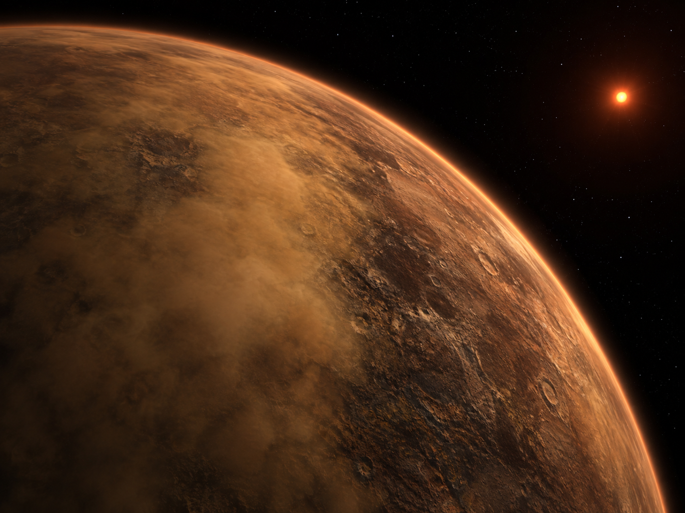
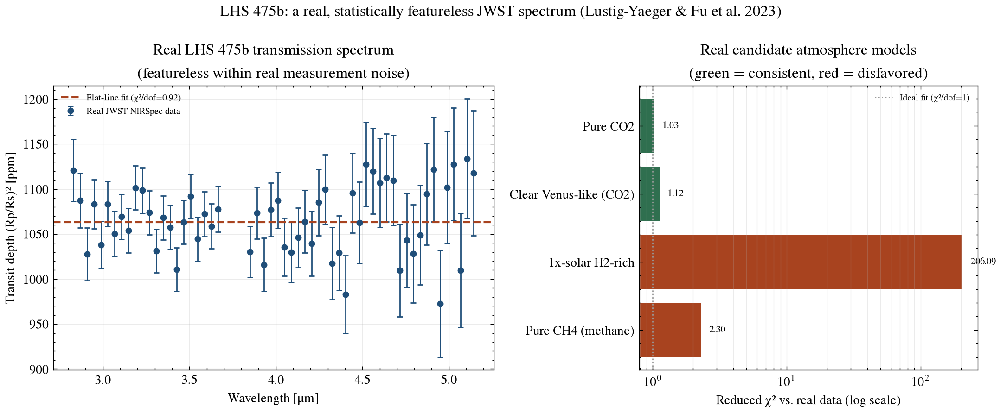
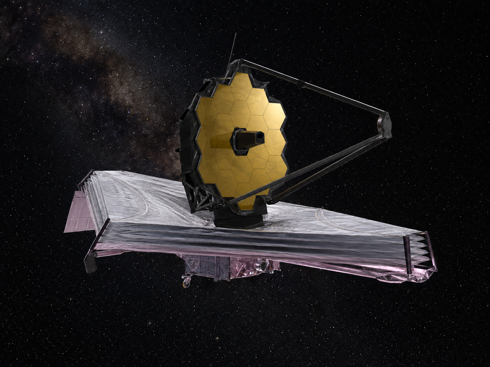

Exoplanet Atmosphere Report · JWST NIRSpec/G395H
An Earth-sized rocky planet interior to its M-dwarf's habitable zone, and one of JWST's first terrestrial-exoplanet targets. This report statistically tests the real, published transmission spectrum against real candidate atmosphere models — showing exactly which are ruled out and which remain possible.
AI-generated artist's concept of LHS 475b — not a real photograph. All data and figures in this report come from actual JWST NIRSpec observations (see below).
Queried live from the NASA Exoplanet Archive TAP service (pscomppars).
| Radius | 0.991 Earth radii — essentially Earth-sized |
|---|---|
| Mass | 0.941 Earth masses |
| Orbital period | 2.029 days |
| Semi-major axis | 0.0204 AU |
| Equilibrium temperature | 586 K — warm, interior to the habitable zone |
| Host star | LHS 475, M3 dwarf, Teff = 3300 K, 0.279 Rsun, 0.262 Msun |
| Distance | 12.48 parsecs (~40.7 light-years) |
| Discovery | 2023, TESS transit photometry; independently validated with JWST |
A rocky planet's transmission spectrum shows wavelength-dependent absorption dips only if starlight is passing through a real, extended, molecule-bearing atmosphere during transit. A flat, feature-free spectrum is not a non-result — it actively rules out entire classes of atmosphere, the same way a flat line on a metal detector rules out large buried objects. JWST's precision (constraining features below 50 parts per million here) makes this a genuinely stringent test, something no previous facility could do for a planet this small.
Lustig-Yaeger & Fu et al. (2023) used two real JWST NIRSpec/G395H transit observations to independently validate LHS 475b's existence and obtain its first transmission spectrum, finding no significant molecular features and using that flatness to rule out specific real candidate atmospheres.

AI-generated 3D-render-style concept — one of several atmosphere scenarios still statistically consistent with the flat spectrum above, not a confirmed depiction.
The left panel shows the real 56-point JWST spectrum with a fitted flat line; the right panel shows the reduced chi-squared of the real data against four real published candidate atmosphere models (PICASO/CHIMERA forward models, offset to the measured depth).

scripts/analyze_spectrum.py.| Test | χ² / dof | reduced χ² | p-value |
|---|---|---|---|
| Flat line | 50.70 / 55 | 0.92 | 0.640 |
| Pure CH4 (methane) | 128.69 / 56 | 2.30 | 1.2×10⁻⁷ — disfavored |
| 1x-solar H2-rich | 11541.08 / 56 | 206.1 | <10⁻³⁰⁰ — decisively disfavored |
| Clear Venus-like (CO2) | 62.90 / 56 | 1.12 | 0.245 — consistent |
| Pure CO2 | 57.58 / 56 | 1.03 | 0.416 — consistent |
The spectrum is statistically indistinguishable from a flat line (chi-squared of 50.70 over 55 degrees of freedom, p = 0.640) — evidence against thick, spectrally active atmospheres. Against the model-comparison p-values: a primordial hydrogen-dominated envelope is decisively rejected, and a cloudless pure-methane atmosphere is disfavored at high confidence (p = 1.2×10⁻⁷), while denser, higher-mean-molecular-weight options like a CO2-dominated, Venus-like atmosphere remain statistically consistent with the data (p = 0.245 and 0.416) — matching the published conclusion that the data cannot yet distinguish a thick CO2 atmosphere, a thin Mars-like one, or bare rock. These p-values assume each model is fixed with no locally fit free parameters (the models were already offset to the measured depth upstream), so dof = N for the model comparisons and N-1 for the flat-line fit, which itself fits one free parameter.
System parameters were queried live from the NASA Exoplanet Archive TAP service. The transmission spectrum and atmosphere models come from Zenodo record 7925111 (Lustig-Yaeger & Fu et al. 2023) — see data/ for the exact files as downloaded and scripts/analyze_spectrum.py for the chi-squared analysis (python scripts/analyze_spectrum.py to rerun it). The webpage described the models as "offset to the measured depth" — that offset is already baked into the upstream Zenodo model files this repo uses, not something this script fits itself, and is documented here rather than left implicit. This repo also compares only 4 of the paper's roughly 12 candidate models (a representative disfavored pair and a representative consistent pair), and a "consistent" p-value here means the data cannot rule the model out — not that it confirms it; a genuinely featureless spectrum is equally consistent with several very different atmospheres, or none at all.

AI-generated illustration of the James Webb Space Telescope, whose NIRSpec instrument took the real spectrum used in this report. Not an official mission photograph — see NASA/JWST for real imagery.